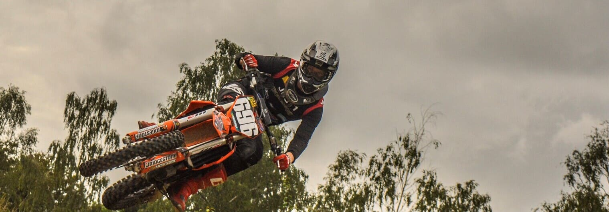
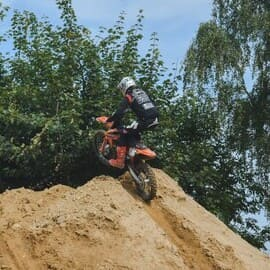
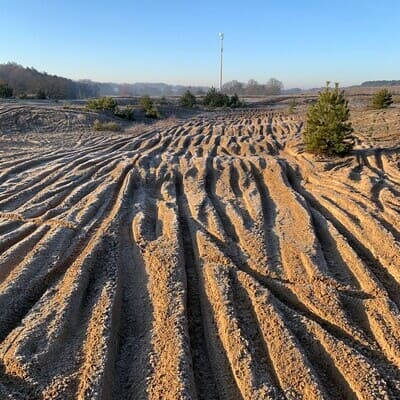
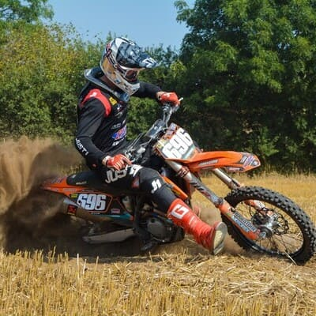
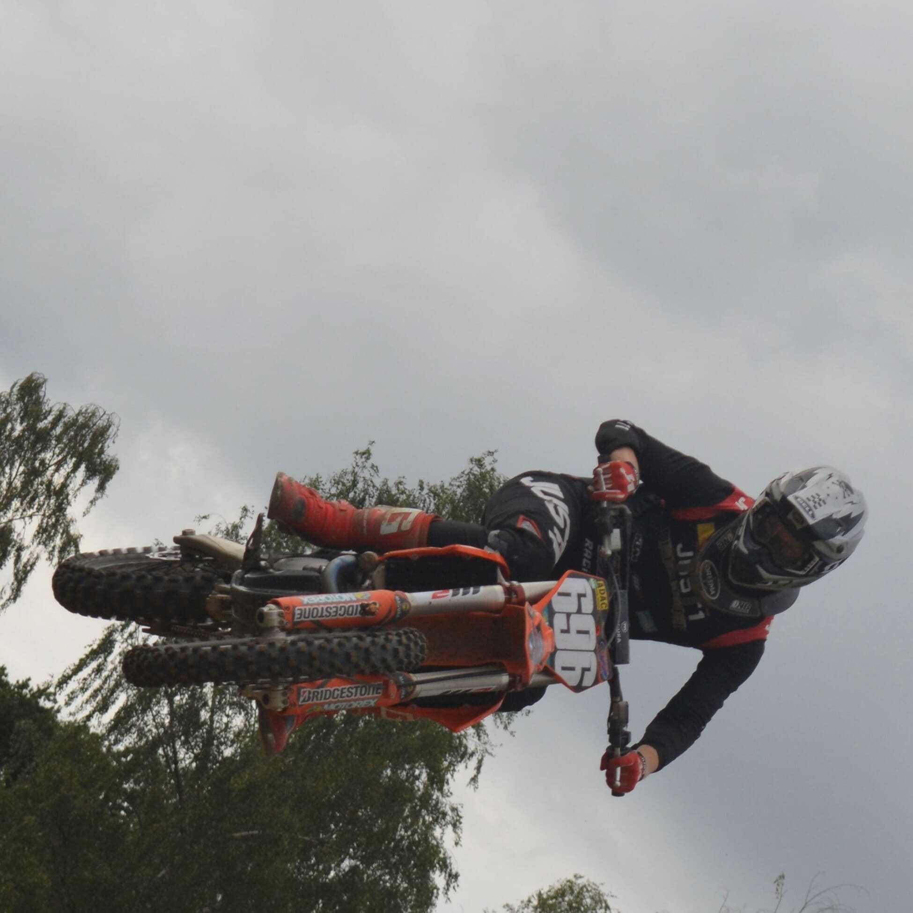
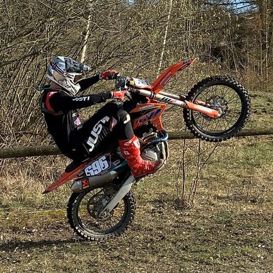
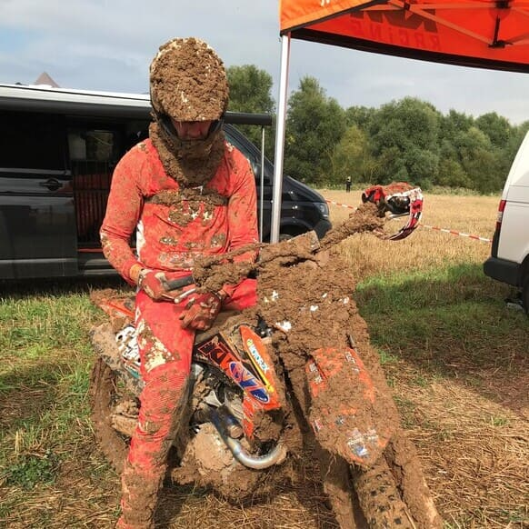

|

Motocross EinzeltrainingTrainingsinhalte

Die richtige Motorradeinstellung:

Die richtige Spurenwahl:

Die richtige Kurventechnik:

Die richtige Sprungtechnik:

Skills:

Waschen:
Kontaktiere mich ©2021 Albert Schadowski |